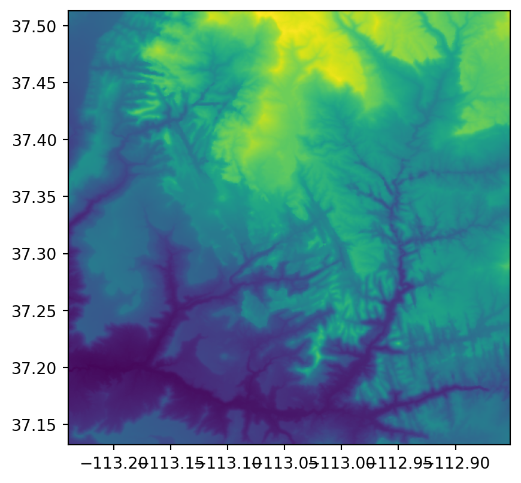
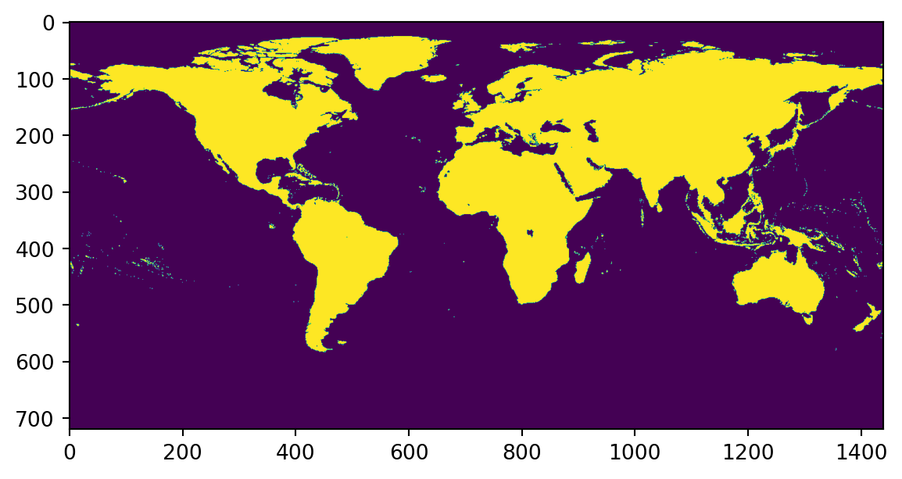

import geopandas as gpd2 Geographic data in Python
2.1 Introduction
In this chapter, we introduce the key Python libraries (and data structures) for working with the two major types of spatial data, namely:
shapelyandgeopandas—For working with vector layersrasterioandxarray—For working with rasters
As we will see later on, shapely and geopandas are related:
shapelyis a “low-level” library for working with individual vector geometry objectsgeopandasis a “high-level” library for working with geometry columns (GeoSeriesobjects), which internally containshapelygeometries, and vector layers (GeoDataFrameobjects)
While geopandas (including its shapely dependency), at present, comprises a ubiquitous comprehensive approach for working with vector layers in Python, this is not the case for rasters. Work with rasters in Python is much less unified. There are several alternative packages, each with its own advantages and disadvantages. We focus on the two most comprehensive and fundamental, namely:
rasterio—…xarray—…
2.2 Vector data
2.2.1 Introduction
When introducing the packages for working with vector layers in Python, we are going to go from the complex class (vector layer), through the intermediate (geometry column), to the simple (geometry). As we will see, the three classes are hierarchical, meaning that the complex encompasses the simple:
- A vector layer (class
GeoDataFrame) contains a geometry column (classGeoSeries) as one of the columns - A geometry column (class
GeoSeries) is composed of individual geometries (classshapely)
The first two classes (GeoDataFrame and GeoSeries) are defined in package geopandas. The third class is defined in package shapely, which deals with individual geometries, and comprises on of the dependencies of the geopandas package.
2.2.2 Vector layers
The typical data structure for vector data is a vector layer. There are several methods to work with vector layers in Python, ranging from low-level (e.g., fiona) to high-level (geopandas). In this book, we focus on geopandas.
Before we begin, we need to import the geopandas package, conventionally as gpd:
We will also limit the maximum number of printed rows to four, to save space, using the "display.max_rows" option of pandas:
import pandas as pd
pd.set_option("display.max_rows", 4)Most often, we import an existing vector layer from a file, such as a Shapefile or a GeoPackage file.
dat = gpd.read_file("data/ne_110m_admin_0_countries.shp")The result is a GeoDataFrame:
type(dat)geopandas.geodataframe.GeoDataFrameThe GeoDataFrame class is an extension of the DataFrame class. Thus, we can treat a vector layer as a table and process it using the ordinary, i.e., non-spatial, pandas methods. For example, the following expression creates a subset with just the country name and the geometry (see below):
dat = dat[["SOVEREIGNT", "geometry"]]
dat| SOVEREIGNT | geometry | |
|---|---|---|
| 0 | Fiji | MULTIPOLYGON (((180.00000 -16.06713, 180.00000... |
| 1 | United Republic of Tanzania | POLYGON ((33.90371 -0.95000, 34.07262 -1.05982... |
| ... | ... | ... |
| 175 | Trinidad and Tobago | POLYGON ((-61.68000 10.76000, -61.10500 10.890... |
| 176 | South Sudan | POLYGON ((30.83385 3.50917, 29.95350 4.17370, ... |
177 rows × 2 columns
The following expression creates a subset based on a condition, including just "Egypt":
dat[dat["SOVEREIGNT"] == "Egypt"]| SOVEREIGNT | geometry | |
|---|---|---|
| 163 | Egypt | POLYGON ((36.86623 22.00000, 32.90000 22.00000... |
Finally, to get a sense of the spatial component of the vector layer, it can be plotted using the .plot method, as follows:
dat.plot()<AxesSubplot:>
2.2.3 Geometry columns
One of the columns in a GeoDataFrame is a geometry column, of class GeoSeries. The geometry column contains the geometric part of the vector layer, e.g., the POLYGON or MULTIPOLYGON geometries of the 177 countries in dat:
dat["geometry"]0 MULTIPOLYGON (((180.00000 -16.06713, 180.00000...
1 POLYGON ((33.90371 -0.95000, 34.07262 -1.05982...
...
175 POLYGON ((-61.68000 10.76000, -61.10500 10.890...
176 POLYGON ((30.83385 3.50917, 29.95350 4.17370, ...
Name: geometry, Length: 177, dtype: geometryThe geomtery column also contains the spatial reference information, if any (see below).
Many of the spatial operators, such as calculating the centroid, buffer, or bounding box of each feature, in fact involve just the geometry. Therefore, for example, the following expressions give exactly the same result, a GeoSeries with country bounding boxes:
dat.bounds| minx | miny | maxx | maxy | |
|---|---|---|---|---|
| 0 | -180.000000 | -18.287990 | 180.000000 | -16.020882 |
| 1 | 29.339998 | -11.720938 | 40.316590 | -0.950000 |
| ... | ... | ... | ... | ... |
| 175 | -61.950000 | 10.000000 | -60.895000 | 10.890000 |
| 176 | 23.886980 | 3.509172 | 35.298007 | 12.248008 |
177 rows × 4 columns
dat["geometry"].bounds| minx | miny | maxx | maxy | |
|---|---|---|---|---|
| 0 | -180.000000 | -18.287990 | 180.000000 | -16.020882 |
| 1 | 29.339998 | -11.720938 | 40.316590 | -0.950000 |
| ... | ... | ... | ... | ... |
| 175 | -61.950000 | 10.000000 | -60.895000 | 10.890000 |
| 176 | 23.886980 | 3.509172 | 35.298007 | 12.248008 |
177 rows × 4 columns
Another useful property of the geometry column is the geometry type (see below). Note that the types of geometries contained in a geometry column (and, thus, a vector layer) are not necessarily the same. Accordingly, the .type property returns a Series (of type string), rather than a single value:
dat["geometry"].type0 MultiPolygon
1 Polygon
...
175 Polygon
176 Polygon
Length: 177, dtype: objectTo summarize the occurence of different geometry types in a geometry column, we can use the pandas method named value_counts:
dat["geometry"].type.value_counts()Polygon 148
MultiPolygon 29
dtype: int64In this case, we see that the dat layer contains Polygon and MultiPolygon geometries.
2.2.4 Geometries
Each element in the geometry column is a geometry object, of class shapely. For example, here is one specific geometry selected by implicit index (that of Canada):
dat["geometry"].iloc[3]and here is a specific geometry selected based on the "SOVEREIGNT" attribute:
dat[dat["SOVEREIGNT"] == "Egypt"]["geometry"].iloc[0]
The shapely package is compatible with the Simple Features standard. Accoridngly, seven types of geometries are supported. The following section demonstrates creating a shapely geometry of each type, using a string in the WKT format as input. First, we need to import the shapely.wkt module:
import shapely.wkt as wktThen, we use the wkt.loads (stands for “load a WKT string”) to transform a WKT string to a shapely geometry object. Here is an example of a POINT geometry:
point = wkt.loads("POINT (5 2)")
point
Here is an example of a MULTIPOINT geometry:
multipoint = wkt.loads("MULTIPOINT ((5 2), (1 3), (3 4), (3 2))")
multipoint
Here is an example of a LINESTRING geometry:
linestring = wkt.loads("LINESTRING (1 5, 4 4, 4 1, 2 2, 3 2)")
linestring
Here is an example of a MULTILINESTRING geometry:
multilinestring = wkt.loads("MULTILINESTRING ((1 5, 4 4, 4 1, 2 2, 3 2), (1 2, 2 4))")
multilinestring
Here is an example of a POLYGON geometry:
polygon = wkt.loads("POLYGON ((1 5, 2 2, 4 1, 4 4, 1 5), (2 4, 3 4, 3 3, 2 3, 2 4))")
polygon
Here is an example of a MULTIPOLYGON geometry:
multipolygon = wkt.loads("MULTIPOLYGON (((1 5, 2 2, 4 1, 4 4, 1 5)), ((0 2, 1 2, 1 3, 0 3, 0 2)))")
multipolygon
And, finally, here is an example of a GEOMETRYCOLLECTION geometry:
geometrycollection = wkt.loads("GEOMETRYCOLLECTION (MULTIPOINT (5 2, 1 3, 3 4, 3 2), LINESTRING (1 5, 4 4, 4 1, 2 2, 3 2))")
geometrycollection
shapely geometries act as atomic units of vector data, as spatial operations on a geometry return a single new geometry. For example, the following expression calculates the difference between the buffered multipolygon (using distance of 0.1) and itself:
multipolygon.buffer(0.2).difference(multipolygon)
Internally, many spatial operations on a geometry column (or a vector layer) are basically iterations where the operator is applied on all geometries, one by one, to return a new geometry column (or layer) with the combined results.
As demonstrated above, a shapely geometry object is automatically evaluated to a small image of the geometry (when using an interface capable of displaying it, such as a Jupyter Notebook). To print the WKT string instead, we can use the print function:
print(linestring)LINESTRING (1 5, 4 4, 4 1, 2 2, 3 2)We can determine the geometry type using the .geom_type property, which is a string:
linestring.geom_type'LineString'Finally, it is important to note that raw coordinates of shapely geometries are accessible through a combination of the .coords, .geoms, .exterior, and .interiors, properties (depending on the geometry type). These access methods are useful for when we need to develop our own spatial operators for specific tasks. For example, the following expression returns the coordinates of the polygon geometry exterior (note that the returned object is iterable, thus enclosed in a list to return all coordinates at once):
list(polygon.exterior.coords)[(1.0, 5.0), (2.0, 2.0), (4.0, 1.0), (4.0, 4.0), (1.0, 5.0)]2.3 Raster data
2.3.1 Introduction
As mentioned above, working with rasters in Python is less organized around one comprehensive package (such as the case for vector layers and geopandas). Instead, there are several packages providing alternative (subsets of methods) of working with raster data.
The two most notable approaches for working with rasters in Python are provided by the rasterio and xarray packages. As we will see shortly, they differ in their scope and underlying data models. Specifically, rasterio represents rasters as numpy arrays associated with a separate object holding the spatial metadata. The xarray package, however, represents rasters with the native DataArray object, which is an extension of numpy array designed to hold axis labels and attributes, in the same object, together with the array of raster values.
Both packages are not comprehensive in the same way as geopandas is. For example, when working with rasterio, on the one hand, more packages may be needed to accomplish (commonly used) tasks such as zonal statistics (package zonalstats) or calculating topographic indices (package richdem). On the other hand, xarray was extended to accomodate spatial operatiors missing from the core package itself, with the rioxarray and xarray-spatial packages.
In the following two sections, we introduce the two well-established packages, rasterio and xarray, which form the basis for most raster functionality in Python. Using any of the add-on packages, or the extensions, should be straightforward, once the reader is familiar with the basics.
2.3.2 Using rasterio
Importing the rasterio package:
import numpy as np
import rasterio
from rasterio.plot import showCreating a file connection:
src = rasterio.open("data/gpw_v4_population_density_rev11_2020_15_min.tif")Examining the metadata:
src.meta{'driver': 'GTiff',
'dtype': 'float32',
'nodata': -3.4028230607370965e+38,
'width': 1440,
'height': 720,
'count': 1,
'crs': CRS.from_epsg(4326),
'transform': Affine(0.25, 0.0, -180.0,
0.0, -0.25, 89.99999999999991)}Plotting:
show(src)
<AxesSubplot:>Reading the 1st layer:
s = src.read(1)
sarray([[-3.402823e+38, -3.402823e+38, -3.402823e+38, ..., -3.402823e+38,
-3.402823e+38, -3.402823e+38],
[-3.402823e+38, -3.402823e+38, -3.402823e+38, ..., -3.402823e+38,
-3.402823e+38, -3.402823e+38],
[-3.402823e+38, -3.402823e+38, -3.402823e+38, ..., -3.402823e+38,
-3.402823e+38, -3.402823e+38],
...,
[-3.402823e+38, -3.402823e+38, -3.402823e+38, ..., -3.402823e+38,
-3.402823e+38, -3.402823e+38],
[-3.402823e+38, -3.402823e+38, -3.402823e+38, ..., -3.402823e+38,
-3.402823e+38, -3.402823e+38],
[-3.402823e+38, -3.402823e+38, -3.402823e+38, ..., -3.402823e+38,
-3.402823e+38, -3.402823e+38]], dtype=float32)show(s)
<AxesSubplot:>msk = src.read_masks(1)
mskarray([[0, 0, 0, ..., 0, 0, 0],
[0, 0, 0, ..., 0, 0, 0],
[0, 0, 0, ..., 0, 0, 0],
...,
[0, 0, 0, ..., 0, 0, 0],
[0, 0, 0, ..., 0, 0, 0],
[0, 0, 0, ..., 0, 0, 0]], dtype=uint8)s[msk == 0] = np.nanshow(s)
<AxesSubplot:>2.3.3 Using xarray
…
import xarray as xrReading:
x = xr.open_dataset("data/air.2x2.250.mon.anom.comb.nc")
x<xarray.Dataset>
Dimensions: (lat: 90, lon: 180, time: 1692)
Coordinates:
* lat (lat) float32 89.0 87.0 85.0 83.0 81.0 ... -83.0 -85.0 -87.0 -89.0
* lon (lon) float32 1.0 3.0 5.0 7.0 9.0 ... 351.0 353.0 355.0 357.0 359.0
* time (time) datetime64[ns] 1880-01-01 1880-02-01 ... 2020-12-01
Data variables:
air (time, lat, lon) float32 ...
Attributes:
title: GISS Surface Temperature Analysis (GISTEMP): 250km smooth...
platform: Analysis
Source: http://data.giss.nasa.gov/gistemp/ source and http://data...
Documentation: http://www.esrl.noaa.gov/psd/data/gridded/data.gistemp.html
Conventions: COARDS
history: created at PSD Jun 2009 by CAS. Converted to chunked, def...
dataset_title: GISS Surface Temperature Analysis
comments: This is the 1200km smoothed combined land,ocean version o...
References: https://www.psl.noaa.gov/data/gridded/data.gistemp.html
update_date: 01/2021
data_modified: 2021-01-29x["air"]<xarray.DataArray 'air' (time: 1692, lat: 90, lon: 180)>
[27410400 values with dtype=float32]
Coordinates:
* lat (lat) float32 89.0 87.0 85.0 83.0 81.0 ... -83.0 -85.0 -87.0 -89.0
* lon (lon) float32 1.0 3.0 5.0 7.0 9.0 ... 351.0 353.0 355.0 357.0 359.0
* time (time) datetime64[ns] 1880-01-01 1880-02-01 ... 2020-12-01
Attributes:
long_name: Monthly Average Temperature Anomalies
valid_range: [-25. 25.]
units: degC
precision: 2
var_desc: Air Temperature: 250km smoothing combined
dataset: GISS Surface Temperature Analysis (GISTEMP)
level_desc: Surface
statistic: Anomaly
parent_stat: Individual obs
cell_methods: time: anomaly (monthly from values)
standard_name: air_temperature_anomaly
comments: ERSST V5 used for SST (starting Oct 25 2017 at PSD) from ...
actual_range: [-19.858845 19.016056]Plot:
x["air"].plot()(array([6.8000000e+01, 9.3800000e+02, 1.4441000e+04, 1.4905200e+05,
5.3337010e+06, 1.4529931e+07, 3.9248800e+05, 4.3241000e+04,
4.2550000e+03, 2.5200000e+02]),
array([-19.858845 , -15.9713545 , -12.083864 , -8.196375 ,
-4.3088846 , -0.42139435, 3.4660957 , 7.3535857 ,
11.2410755 , 15.128566 , 19.016056 ], dtype=float32),
<BarContainer object of 10 artists>)
2.4 Coordinate Reference Systems
dat.crs<Geographic 2D CRS: EPSG:4326>
Name: WGS 84
Axis Info [ellipsoidal]:
- Lat[north]: Geodetic latitude (degree)
- Lon[east]: Geodetic longitude (degree)
Area of Use:
- name: World.
- bounds: (-180.0, -90.0, 180.0, 90.0)
Datum: World Geodetic System 1984 ensemble
- Ellipsoid: WGS 84
- Prime Meridian: Greenwichsrc.crsCRS.from_epsg(4326)2.5 Exercises
…